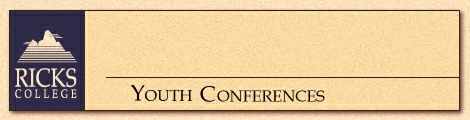

Ricks College hosts several ward and stake youth conferences each summer. Ricks College Conference Coordinators work closely with the stake/ward chairperson to effectively plan each youth conference and schedule activities, rooms, food, housing, etc. A planning manual and speakers list are provided to assist with this planning. The typical youth conference is three days two nights. One and two day youth conferences are also available. Participants are housed in the Ricks College dorms or a nearby apartment complex and food arrangements can be made for the cafeteria or special meal events. Typical activities for youth conferences are:
Continuing Education Home Page